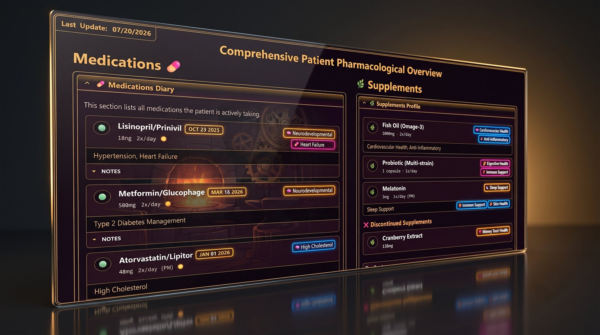
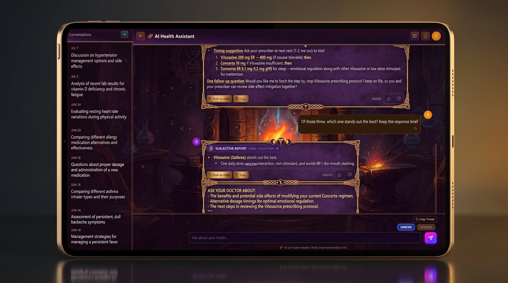
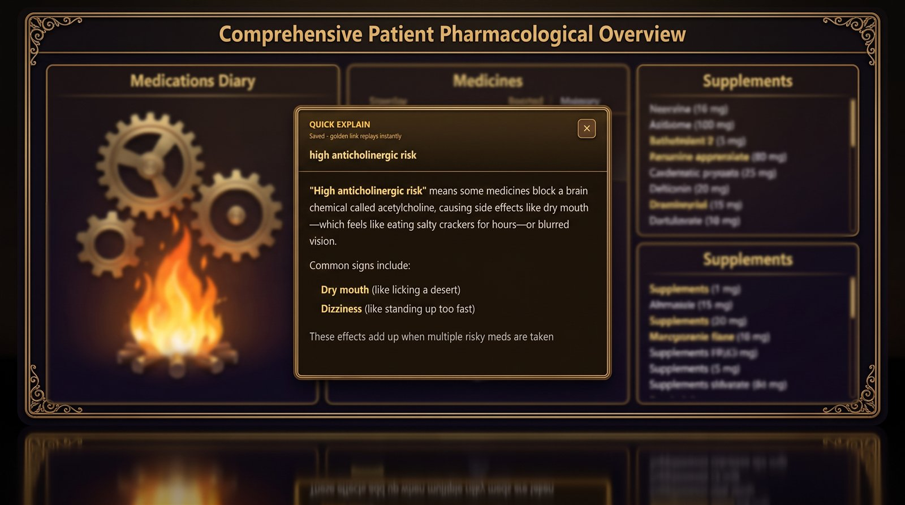

Patient-controlled health records with built-in AI.
A privacy-first platform for organizing medical history, generating insights, and planning next steps.
🏠 Dashboard · conditions, activity, and trend charts at a glance
🚀 Elevator Pitch
ChartForge turns a personal medical chart into a living, intelligent system. It helps patients and advocates collect structured records, summarize complex histories, visualize trends, and prepare better questions for clinicians.
The core rule is simple: 🤖 AI can propose, but 👤 humans decide. The assistant can draft a chart update, explain a term, or summarize a thread, but edits go through review before they become part of the record.
❓ Why This Project Exists
Traditional patient records are scattered across portals, PDFs, visit notes, screenshots, and memory. ChartForge gives those fragments a usable home:
🗂️Ownership and control of the health record
📚Rich, structured documentation that stays readable
🤖A chart-aware AI assistant for summaries, explanations, and draft updates
📈Visual trends for vitals, symptoms, and progress over time
🛡️Review gates so automation cannot silently rewrite the chart
🎯 Who It's For
🧍Patients and advocates managing complex, multi-year health journeys
🩺Care teams that need cleaner summaries before visits
🛠️Builders interested in privacy-aware AI, clinical UX, and patient-owned records
💼Employers looking for full-stack product execution with real-world safety constraints
✨ Highlights
👑Patient-Controlled Chart: The patient owns the record. AI helps read, summarize, and draft, but approved users decide what changes.
🧱Documents as Building Blocks: Profile, condition, management, and reference pages render through clinical layouts instead of raw markdown.
🤖Chart-Aware AI Assistant: Chat can answer from the chart, keep context across a long thread, and send useful output to review.
✅Review Before Write: Proposed chart edits are queued, diffed, and applied only after a human approves them.
🔎Insights Queue: Separate scans flag stale items, conflicts, and gaps for approve, archive, or promote-to-chart workflows.
💊Medication + PGx Views: Medication, supplement, and pharmacogenomics pages use purpose-built layouts for faster review.
📊Trends and Correlations: Vitals and symptom metrics can render as focused charts.
🔒Privacy-First Design: Patient scope, role checks, row-level security, and tokenized AI calls are built into the architecture.
📸 Screenshots
A closer look at the product surfaces.
🏠 Dashboard · metrics, activity, and trends

💊 Medications · diary, supplements, pillar tags

🤖 AI Chat · chart-aware answers with review actions

💡 Quick Explain · plain-language term popups
🔑 Core Features
Feature
Description
🏠 Patient Dashboard
Active conditions, record counts, recent activity, and trend cards for the linked patient.
📄 Clinical Documents
Profile, condition, management, and reference pages rendered with layout-aware components.
🤖 AI Chat
Full-page and sidebar chat grounded in the patient chart, with concise or detailed response modes.
✅ Review Queue
AI-proposed edits are listed, reviewed, and applied only on approval.
🔎 Insights
Background scans surface gaps, conflicts, stale data, and follow-up opportunities.
💊 Medications + PGx
Medication, supplement, and pharmacogenomics views built for quick clinical scanning.
📊 Charts
Vitals, symptoms, and relationship charts through reusable visualization components.
🛠️ Admin Tools
Invites, user roles, patient linking, sync checks, restore points, and feedback moderation.
Supabase, PostgreSQL, Google OAuth, row-level security
🧠 AI
Vercel AI SDK, OpenRouter models, optional web research
📝 Content
Markdown documents, frontmatter, Mermaid diagrams
📦 State + Validation
Zustand, Zod
📉 Charts
Recharts
🧪 Testing
Vitest
🏗️ Architecture at a Glance
🔐Patient-scoped runtime: Authenticated users see only the chart they are linked to, unless an admin role allows wider operation.
📚Document-first model: The chart stays readable as structured documents while the app renders richer layouts on top.
🎯Direct chart grounding: Chat loads prioritized chart context directly instead of depending on a patient-chart vector database.
🧑⚖️Human review loop: Chart-writing actions flow through review so AI output stays inspectable.
🛡️Operational safety: Admin sync, restore, feedback, and role tooling are first-class surfaces.
🚦 Current Status
ChartForge is actively developed. The current focus is hardening review flows, improving reference-grounded answers, expanding medication and pharmacogenomics views, and keeping the interface fast enough for everyday chart work.
💼 Differentiators
❤️Patient-first product thinking: Built around how patients and advocates actually collect, explain, and use health records.
🛡️Safety-aware AI: The assistant is helpful by design, but not allowed to silently modify the record.
🧬Real clinical density: Medication lists, timelines, PGx, metrics, and narrative notes live in one navigable system.
⚙️Modern full-stack execution: Next.js, Supabase, AI streaming, admin workflows, and testable safety gates in one product.
✨Polished UX direction: Rich visuals without losing the calm, readable feel needed for clinical content.